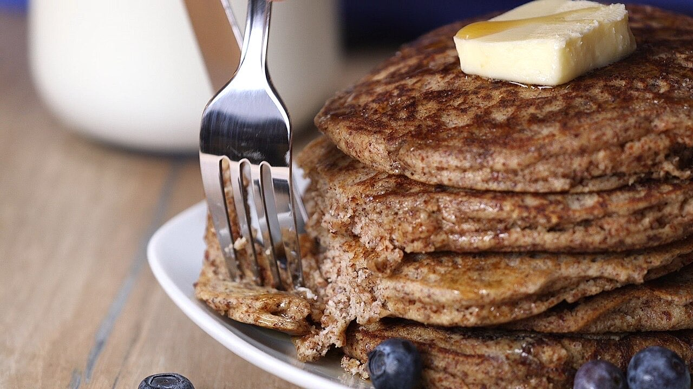
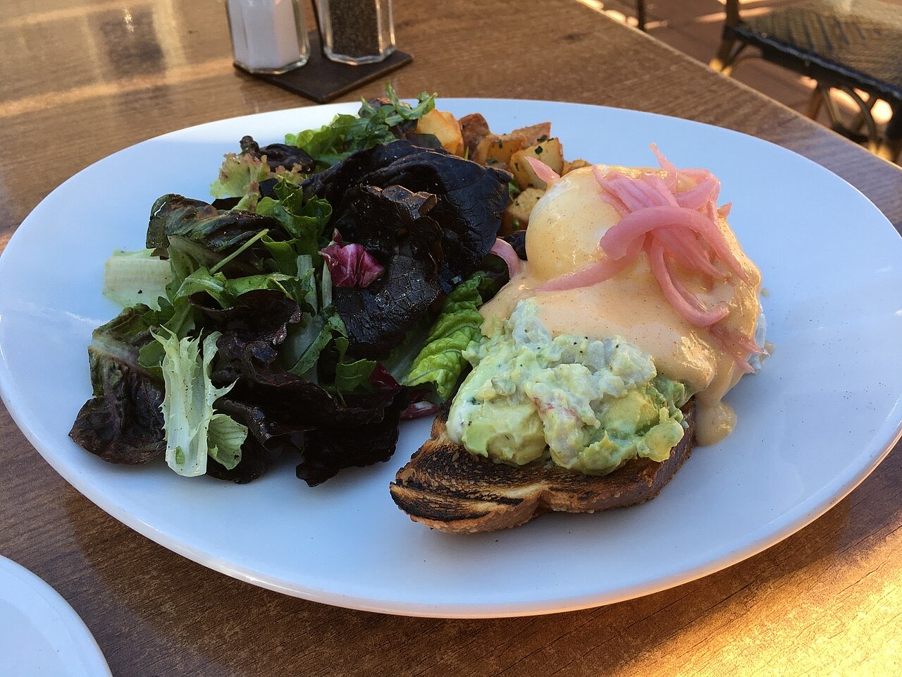

Fotografias ilustrativas — no site final usamos as vossas.
Casa de chá / brunch · Guimarães
Brunch e chá com calma
Uma casa de chá para mesas demoradas.
Uma pausa a meio da manhã ou da tarde.
4,7★ em 128 avaliações no Google.
A Gardénia Coffee & Brunch é uma casa de chá e brunch na Rua de Francos, em Guimarães. Um sítio para um café, um chá e uma manhã sem pressa.


Fotografias ilustrativas — no site final usamos as vossas.
Encomenda
Diga o que precisa e quando quer levantar (ou receber). Respondemos por WhatsApp.
↑ Assim chegaria a mensagem ao vosso WhatsApp. (Nesta demonstração nada é enviado.)
Onde estamos
Proposta para Gardénia Coffee & Brunch
Esta página foi feita de propósito para Gardénia Coffee & Brunch por João Machado, programador web aqui de Guimarães. Inclui:
Eu trato do alojamento e da manutenção. Sem compromisso.